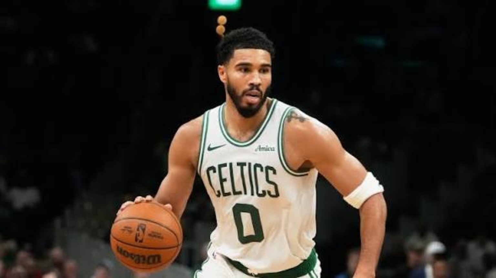
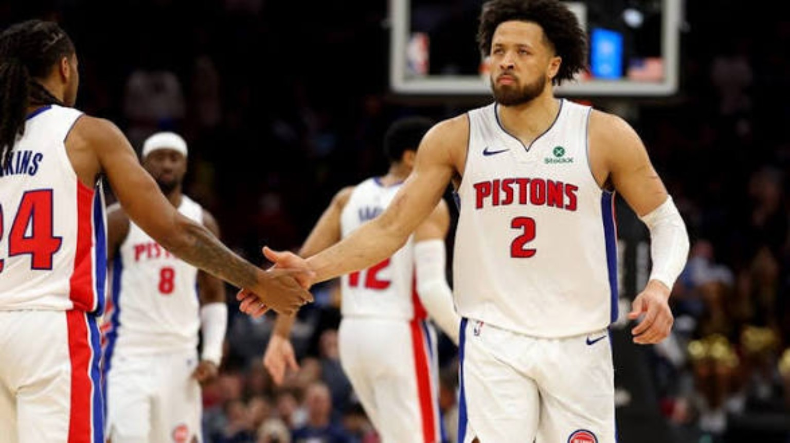
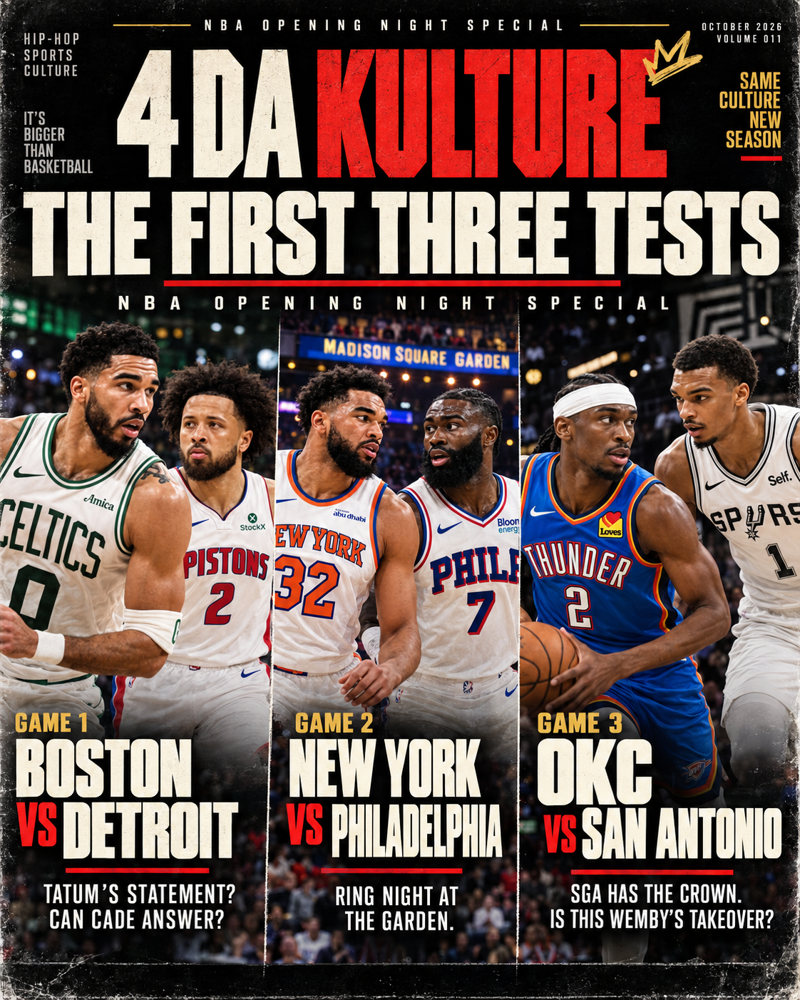
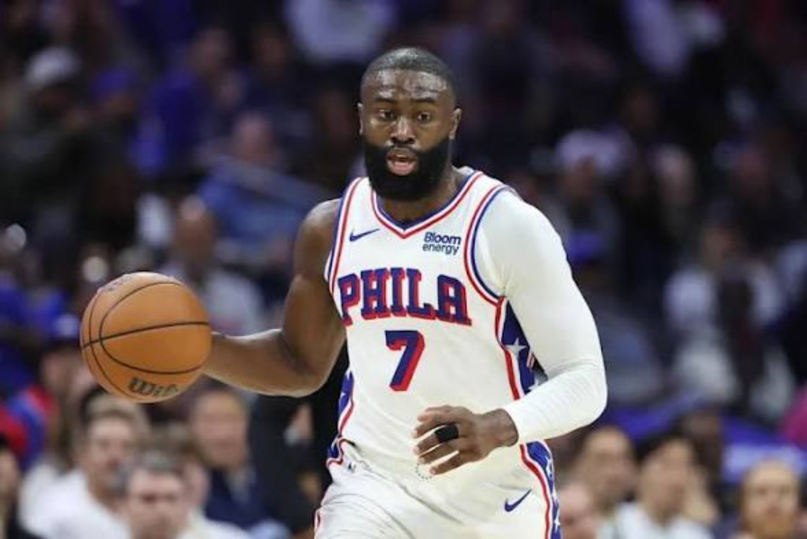
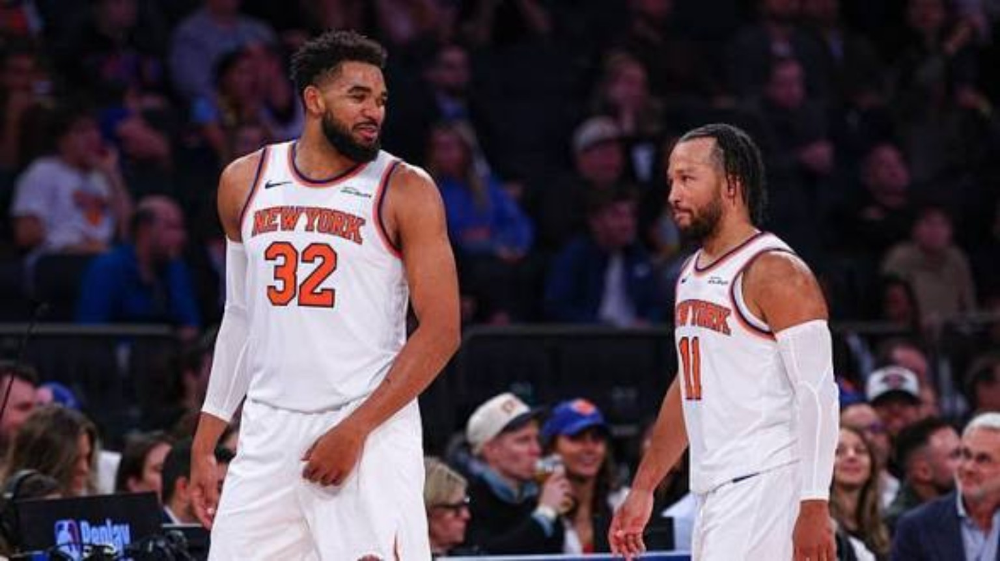
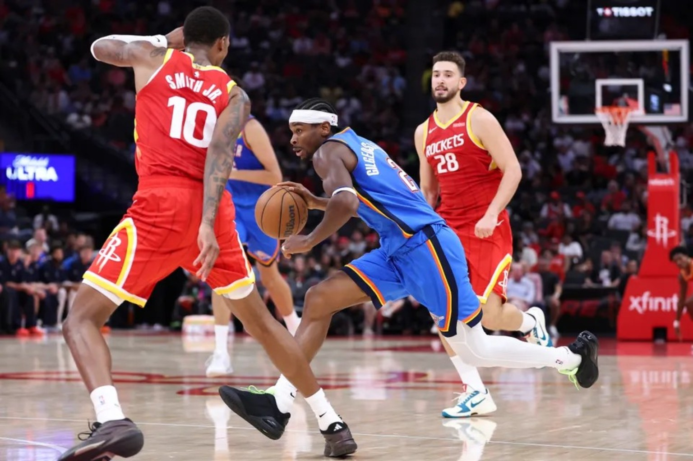
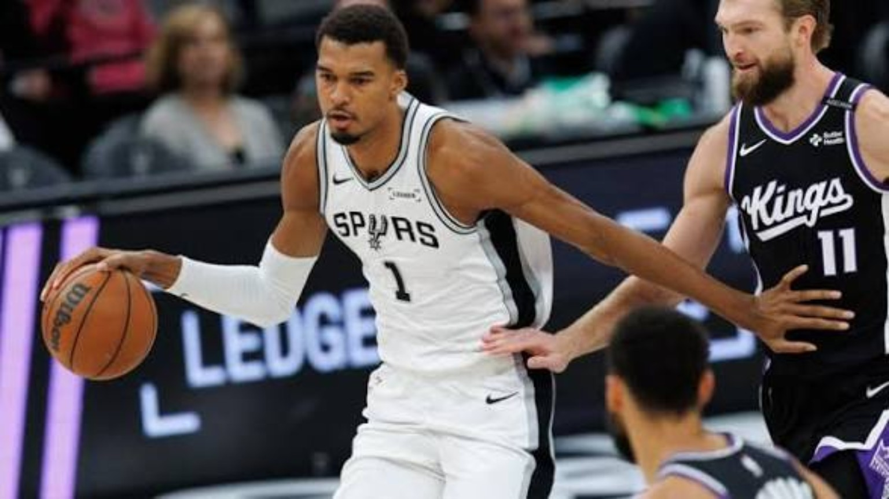

GAME 01 • 12 PM PACIFIC
BOSTON @ DETROIT
Tatum setting the offensive tone; Pritchard's added responsibility; Duren's defense and production; Ausar's confidence on offense.
WATCH: TATUM • PRITCHARD • DUREN • AUSARJamal Murray powers a 23-point comeback. Philadelphia and Houston stay unbeaten. Devin Booker drops 43. Plus Caleb Wilson, Cleveland’s late scare, and our analysis of every game.
READ THE COMPLETE OCTOBER 24 NIGHTCAP →Find published reports by player, team or game. No unverified scores.
Every game gets its proper respect. Real scores, real performances, and the conversations the box score alone can't capture. Read the complete October 23 Nightcap with all 12 games, featured analysis and nightly awards. Earlier editions and the October 23 pregame preview remain in the archive.
Lakers–Clippers, Knicks–Celtics and Rockets–Spurs headline Friday's slate. Pregame analysis only; no final scores claimed.
READ OCTOBER 23 PREVIEW →Philadelphia rallies against Cleveland. Oklahoma City wins with defense and depth against Denver. Two games, two statements from teams with championship expectations.
READ OCTOBER 22 NIGHTCAP →Haliburton returns. Dame and Ja begin a new chapter in Portland. New-team stars, rookies and all 11 matchups get the 4DK treatment.
READ THE COMPLETE OCTOBER 21 NIGHTCAP →Opening night delivered three revealing matchups. Read our complete breakdown of Detroit versus Boston, Philadelphia versus New York, and Oklahoma City versus San Antonio — plus what comes next.

Three games, six teams, and plenty to unpack. Our full Nightcap looks at the turning points, standout performances, team outlooks, and next-game questions.


Tatum setting the offensive tone; Pritchard's added responsibility; Duren's defense and production; Ausar's confidence on offense.
WATCH: TATUM • PRITCHARD • DUREN • AUSAR

Ring night at the Garden. LeBron organizing a loaded offense, Brunson controlling tempo, and the Sixers finding their late-game pecking order.
WATCH: BRUNSON • LEBRON • MAXEY • BROWN • EMBIID • VJ

Shai's crown against Wemby's takeover. Wemby versus Chet in the paint, plus the Fox–Castle–Harper three-guard experiment.
WATCH: SGA • WEMBY • CHET • FOX • CASTLE • HARPERScore updates are automatic when the data service responds. Original 4DK analysis is written separately after verified results; this scoreboard does not publish a recap.
Our October 20 opening-night analysis is published. Read the full Nightcap →
Tonight's standings and tomorrow's schedule update from the league feed while we prepare the original Nightcap. The data is automatic; our analysis isn't.
Final score, turning point, what each team executed, how key rotations performed, and how the result changes the bigger picture.
Player of the Night, the rookie spotlight, key stats and overlooked contributors, with contextual analysis—not numbers pasted into a list.
One verified postgame story per slate. Regular-season Nightcaps appear above the labeled preseason archive when published. The old editions stay available.
Newest first. Every past edition remains available. PRESEASON Nightcaps stay labeled as preseason even after the real games begin.